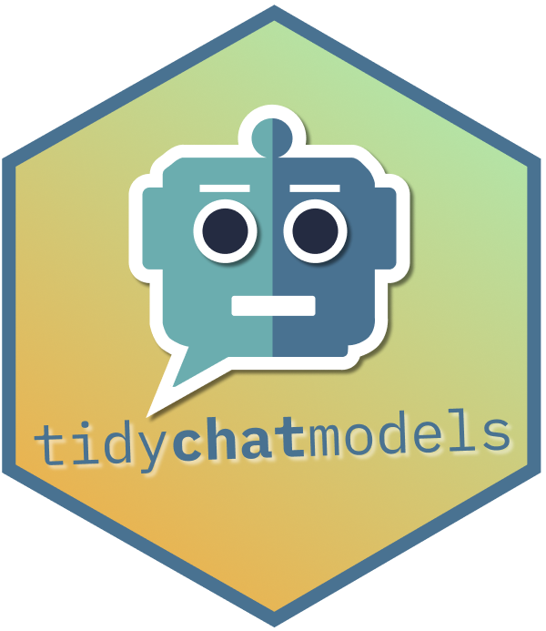
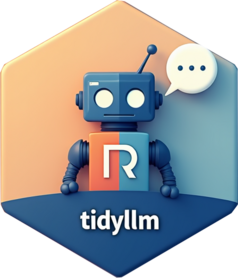
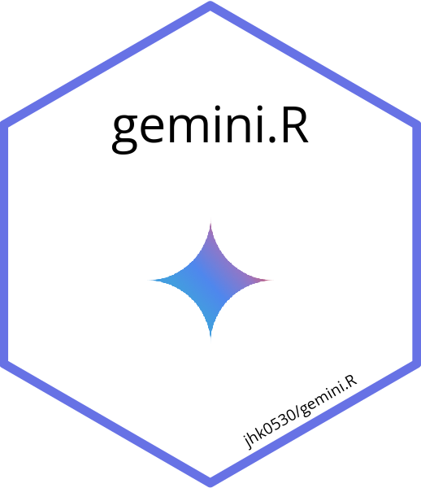
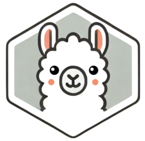
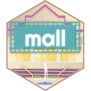
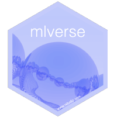
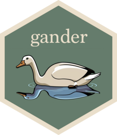

library(hellmer)
chat <- chat_batch(chat_gemini, system_prompt = "Reply concisely in Spanish")
prompts <- list(
"What is factorial 10?",
"Name three Metallica Song",
"Count to 3.",
"Say hello.",
"What is the Capital of Ghana?"
)
result <- chat$batch(prompts)
result$texts()2 R Packages
This section includes R packages that interface with LLM APIs or provide helpers, chats, or relevant addins.
In no particular order, but now grouped into loose groups:
2.1 General interfaces
2.1.1 llmR
llmr by Angelo D’Ambrosio provides a unified API to interact with various LLMs and providers through functions with consistent grammar and syntax. Provides easy switching between models, plus logging. Seems similar to elmer. Will try it soon.
- A similar package called LLMR recently appeared on CRAN but I could not find much materials about it.
2.1.2 tidychatmodels

A pipe-friendly interface to many chatbot vendors. Developed by Albert Rapp, tidychatmodels follows the modular nature of tidymodels and uses httr2 to communicate with different models. Good documentation, examples, and a clear video walkthrough on YouTube.
2.1.3 tidyllm

tidyllm by Eduard Brüll provides pipe-friendly access to multiple LLM APIs in a smooth and readable way. We can pass images, documents, videos, and plots from the plot pane to the package functions, and the package has very thorough documentation. Similar in some ways to ellmer, but looks very useful for both batch processing and interactive work.
2.1.4 gemini.R

gemini.R by Jinhwan Kim connects R with Google’s gemini model via the gemini API. With a valid API key, the gemini() function takes text prompts and the gemini_image() function can work with images and text prompts.
The package algo provides an RStudio addin for creating Roxygen documentation.
I recently used the Gemini Flash 2 model to pull information from a scanned PDF with decent success.
2.2 Ollama-based tools, wrappers and helpers
2.2.1 ollamar

Developed by Hause Lin and Tawab Safi, ollamar Integrates R with Ollama, for running language models locally.
With ollamar we can pull different models, interact with objects that store chat histories, and handle the outputs as data frames, lists, or vectors.
Works nicely with httr2, which is a big advantage.
2.2.2 rollama

rollama by Johannes Gruber and Maximilian Weber wraps the Ollama API. Once we pull a model, we can work locally with various LLMs and perform tasks like annotation and text embedding.
The R functions used to interact with Ollama include a nice argument for specifying the format of the response (e.g., do we want plain text, lists, data frames, httr2, etc.). The package has useful vignettes for different usecases.
2.3 Unit testing helpers
2.3.1 ensure
ensure by Simon Couch helps write code for unit tests using the testthat package. Works through an Rstudio addin, and the documentation mentions that the model has been made aware of testthat syntax and the tidy style guide for code. Will be trying it out for my more recent packages that still have poor test coverage.
2.4 mlverse
2.4.1 mall

mall is part of the mlverse ecosystem of open source Data Science and Machine Learning libraries. Rather than a chat-based approach, mall applies LLMs rowwise in the columns of a data frame. Built-in prompts include translating, summarizing, extraction, and sentiment analysis of text strings.
mall uses Ollama and is implemented for both R and Python. I will likely be using it to analyze the comments I collected about loaded packages, which I talked about in my posit::conf(2024) talk.
2.4.2 lang

lang is also part of the mlverse. This package uses LLMs to translate R documentation and display it in the help pane of Rstudio or Positron. Having participated in various translation initiatives, I am very wary of machine-translated function documentation and how it may affect new learners.
The best part of this package (in my opinion) is the infrastructure for package developers to help translate documentation that after editing can be shipped as part of package with multilingual help files.
2.4.3 chattr

chattr is also part of the mlverse. This package interfaces LLMs with R directly inside RStudio. Interaction with the models ideally happens through a Shiny app that runs inside the Viewer pane in RStudio.
2.5 ellmer and friends
2.5.1 ellmer

note that ellmer was previously called elmer, and was renamed in December 2024 to avoid case-insensitive clash with ELMER on bioconductor.
ellmer is a new tidyverse-adjacent package by Hadley Wickham and Joe Cheng for interacting in R with various models, either programmatically or interactively. elmer creates R6 chat objects that remember context, and we can interact with models with a console or browser-based chat box, or programmatically within R functions.
Seems promising, quite flexible, and all the activity in the GitHub repo suggests a very active development process, a solid dev team, and lots of community input.
2.5.2 hellmer
To batch process ellmer chats and their outputs, Dylan Pieper created hellmer. The package is loaded with useful features, has progress bars and helpful messages, and plays nicely with ellmer.
I ran this example with gemini (after setting up the API key) and it worked great:
The list of results:
result$texts()
[[1]]
[1] "3,628,800\n"
[[2]]
[1] "* Enter Sandman\n* Master of Puppets\n* Nothing Else Matters\n"
[[3]]
[1] "Uno, dos, tres.\n"
[[4]]
[1] "Hola.\n"
[[5]]
[1] "Acra.\n"2.5.3 chores

chores was prevously called pal but was renamed recently. See this issue for the discussion and reasoning behind the name change.
chores by Simon Couch provides easy to use assistants that can edit, document, or explain code. The package provides an addin that works in both RStudio and Positron. Very cute package logo, and pal seems like a good option for writing boilerplate code and automating some of the more tedious, repetitive tasks. Works with multiple underlying models. Haven’t tried it yet.
- Here’s a tutorial in Spanish for using chores with custom assistants that can have different roles.
2.5.4 gander

Simon Couch is on a roll, and released the cool gander package in early 2025.
gander leverages ellmer to go beyond a chat box and actually incorporate a context-aware assisant into our IDE of choice. Works well in both RStudio and Positron, and can actually look for context in files and inside R environment (variable names, objects, function definitions, etc.)
This short screen recording comes from the package readme and shows the tool in action:
This feels similar to using the continue extension in Positron but more oriented to R, and I’ll likely be using this going forward.
2.6 RAG tools
2.6.1 ragnar
As the name implies, ragnar by Tomasz Kalinowski helps implement Retrieval-Augmented Generation (RAG) workflows in R with transparency and efficiency. Uses duckdb by default for efficient work with big data and currently supports ollama (more models likely to come soon). RAG is a way to link generative models with external resources rich in technical details to ultimately enhance the accuracy and reliability of models with real, citable facts.
I liked the example in the readme, showing how the R for Data Science book was ingested and queried using the package.
2.7 Computer Vision
2.7.1 kuzco
kuzco by Frank Hull & Johannes Breuer leverages ollamar and ellmer to provide a computer vision assistant right inside R, using LLMs as an alternative to torch for tasks including image classification, recognition, sentiment, and text extraction. The output provided comes in very nice and usable tibbles.
Cool hex logo and the example in the readme features a very cute puppy :3